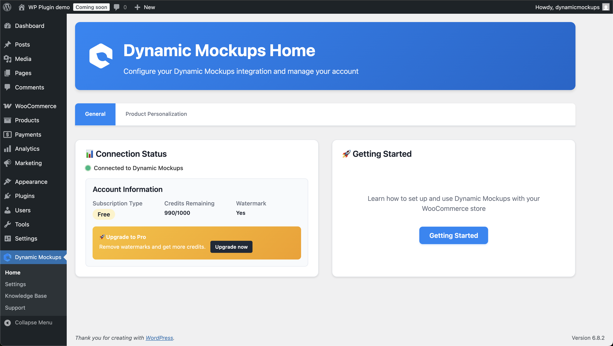
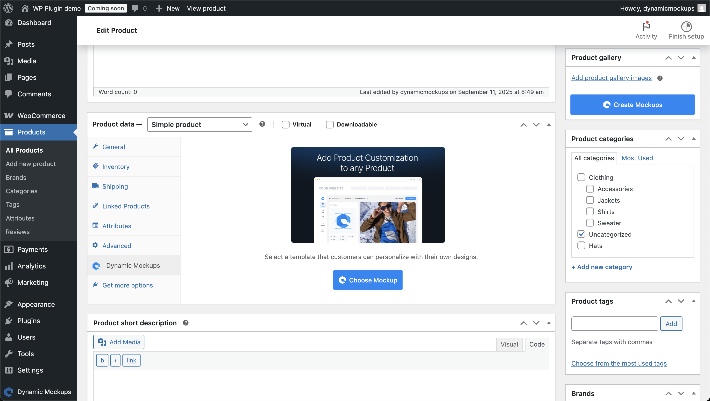
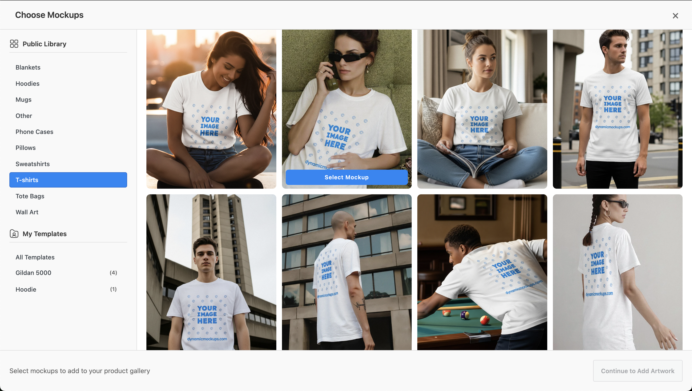
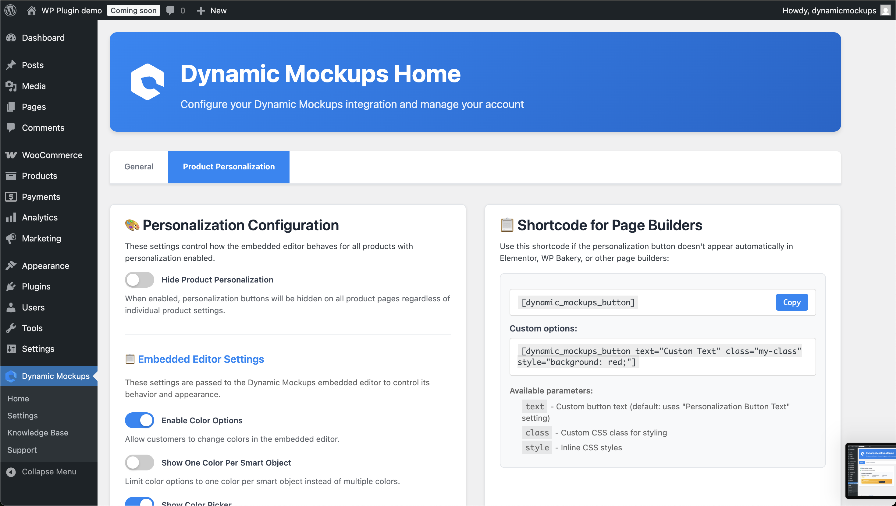

Revised proposal, updated pricing, and a step-by-step map of every integration: Odoo, WooCommerce, and the product visualiser.
SowEasy stays on WordPress — we optimise, clean up, and properly integrate it. BuddyBurst goes on Commerceflo. Both live. Both working.
Your trade portal. Customers log in, browse, configure orders, and submit. WooCommerce stores the order and fires a webhook the moment it's placed.
Installed in Odoo. Acts as the bridge. Uses WooCommerce REST API credentials + webhook listeners. Syncs in both directions via queue system with error logs.
Finance, inventory, sales orders, warehouse — nothing changes in how Jeremy and your team use Odoo day to day. Orders simply appear as Sales Orders automatically.
Real-time order import via webhooks. Stock and product updates run on configurable schedules. Queue dashboard shows any failures with root-cause logs.
| Data | Direction | How | Notes for SowEasy |
|---|---|---|---|
| New Orders | WooCommerce → Odoo | Webhook (real-time) | Creates Sales Order in Odoo. Status: Processing or On Hold imported. Net terms — no payment gateway needed. |
| Order Status Updates | Odoo → WooCommerce | Manual / cron | When you mark dispatched in Odoo, status pushes back to WooCommerce so the customer can see it. |
| Tracking Numbers | Odoo → WooCommerce | Automatic | Export tracking numbers back to WooCommerce order — customer gets notification. |
| Stock Levels | Odoo → WooCommerce | Cron job (scheduled) | Odoo is master of stock. WooCommerce reflects it. Note: SowEasy currently hides stock — this remains optional/off. |
| Products + Variants | Both ways | Manual export / import | Matched by Internal Reference (Odoo) = SKU (WooCommerce). One-time setup, then maintained from Odoo. |
| Pricing (B2B tiers) | Odoo → WooCommerce | Pricelists | Each trade account gets a pricelist in Odoo. The connector pushes the right price per account to WooCommerce. This is how your 3-tier pricing works online. |
| Customer Data | Both ways | Import / sync | Existing 700–800 accounts: we import WooCommerce customers into Odoo and link them. New registrations sync automatically. |
| Refunds / Cancellations | Both ways | Webhook | Cancel in Odoo → cancels in WooCommerce (and vice versa). Credit notes generated correctly in Odoo accounting. |
Existing WooCommerce B2B login. Their account is already linked to an Odoo customer record and a pricelist. No new credentials needed.
Customer action WooCommerceWooCommerce displays prices from the Odoo pricelist assigned to their account. A "Wills my wag" small distributor sees distributor pricing. Hotline or Total Merchandise see their volume tier. This is handled by the connector's pricelist mapping — no custom code required.
Customer action Odoo pricelistOn the product page, a "Customise this product" panel appears (powered by the DynamicMockups WordPress plugin). Customer uploads their logo or artwork. The plugin calls the DynamicMockups API, renders the logo onto the product mockup template, and shows a preview within seconds. No page reload. This works for Seedsticks, seed packets, branded pots — any product you've set up a mockup template for.
Customer action DynamicMockupsCart stores: product SKU, quantity, artwork file reference, rendered mockup image. No payment details entered — this is a trade order on net terms.
Customer action WooCommerce cartStandard WooCommerce checkout, simplified. Fields: delivery address, required-by date, any notes. Payment method = "Invoice / Net Terms" (no card, no PayPal). Customer clicks Submit Order.
Customer action WooCommerce checkoutThe moment the order is submitted, WooCommerce sends a webhook to Odoo. The connector creates a Sales Order automatically — customer, products, quantities, delivery address, required date, notes, artwork file link. Your team sees it in Odoo within seconds. No email, no manual entry.
Automatic Odoo Sales Order createdOdoo SO → confirm → pick/pack/ship. If artwork approval is needed, you email the proof as you do today — or at a later phase we add a portal page for digital sign-off. Tracking number entered in Odoo delivery.
Your team in OdooWhen you mark the Odoo delivery as done and enter a tracking number, the connector pushes that back to WooCommerce. The customer's order page on SowEasy shows "Dispatched" with the tracking number. Automatic email notification to the customer.
Automatic WooCommerce order updated Customer notifiedFor each product — Seedstick pack, seed packet, branded pot — you create one mockup template in the DynamicMockups web app. Upload a PSD or choose from 1,000+ library templates. Define the "print area" (where logos go). Assign it to the WooCommerce product. Done.
Install "Dynamic Mockups" from the WordPress plugin repository. Connect to your DynamicMockups account. Plugin adds a "Create Mockups" button to each WooCommerce product. Also enables customer-facing personalisation on the product page. Tracks personalised orders in the WooCommerce order panel — "View Mockup" and "Download Print File" links per order line.


PNG, JPG, or WebP. The DynamicMockups WordPress plugin handles the upload UI directly on the WooCommerce product page. No redirect, no third-party site.
A POST request to https://app.dynamicmockups.com/api/v1/renders is sent with the mockup template UUID (the product's template) and the customer's uploaded artwork URL. This is the API call — takes under 2 seconds in normal conditions.
DynamicMockups Photoshop rendering engine places the logo into the print area on the product mockup, applies blending and positioning, and returns a URL of the rendered image. Output: PNG (default), JPG, or WebP. High resolution.
The plugin displays the returned image on the product page. No page reload. Customer sees their logo on the Seedstick pack (or whatever product). They can re-upload a different logo, see the new preview, then proceed to cart.
The customised design is attached to the cart item. When the order is placed, WooCommerce stores both the rendered mockup image and the original print-ready file with the order.
In the WooCommerce order panel, each personalised line item shows two links: "View Mockup" (the preview image) and "Download Print File" (the print-ready file, named with the layer/position so your team knows exactly where to print). No more chasing Sandeep for artwork files on sub-£250 orders.


I log into SowEasy, see my pricing, upload my logo, see it on the product, select quantity and delivery date, and submit. I get a confirmation email. I can track my order status. I don't have to wait for a quote email or chase anyone.
When a trade customer submits an order on SowEasy, it appears as a Sales Order in Odoo within seconds. All the details are there — customer, products, quantities, delivery address, date needed, and a link to the artwork file. I confirm, pick, pack, ship. When I enter the tracking number in Odoo, the customer's SowEasy order updates automatically.
Odoo handles finance, inventory, and sales orders exactly as it does today. The WooCommerce connector pushes online orders in — Jeremy doesn't need to change how he works. Pricing lives in Odoo pricelists, stock lives in Odoo, and the connector keeps WooCommerce in sync. SowEasy is the front door; Odoo is still the business brain.
These accounts stay manually serviced, handled offline. The portal is built for the 67 accounts below £250 per order, not for your white-glove top clients. Nothing about this build disrupts how you serve them.
| Phase | What we deliver | When |
|---|---|---|
| Setup + Connector | Install Emipro WooCommerce Odoo Connector. Configure API credentials, map warehouses, map payment methods (net terms). Import existing WooCommerce customers into Odoo and link accounts. Set up pricelist mapping for existing B2B tiers. | Weeks 1–2 |
| Products + Pricing | Match existing WooCommerce products to Odoo by SKU. Export pricing from Odoo pricelists. Test that logged-in distributor accounts see correct pricing on SowEasy. Validate order import via test orders. | Weeks 2–3 |
| DynamicMockups Visualiser | Install WordPress plugin. Build mockup templates for priority products (start with top 5 SKUs by order volume). Configure print areas. Enable logo upload on product pages. Test full loop: upload → preview → add to cart → order stored with print file. | Weeks 3–4 |
| Checkout + Order Flow | Configure net terms checkout. Delivery address + required-by date fields. Order confirmation emails. End-to-end test: order placed on SowEasy → Sales Order in Odoo → tracking pushed back → customer notified. | Week 4 |
| BuddyBurst on Commerceflo | Parallel build: BuddyBurst as a DTC transactional site — samples, artwork upload, order placement, proof approval, order tracking. Built on Commerceflo. Separate to SowEasy. | Weeks 3–6 |
| Testing + Handover | UAT with your team. Fixes. Documentation of how to add new products to the visualiser, how to manage the connector queue, what to do if a sync fails. Go live. | Week 6–7 |
Confirm which version of Odoo you're on (On-Premise or Odoo.sh) and that Jeremy is okay with us configuring the connector from the Odoo side. That's it. Everything else we handle.